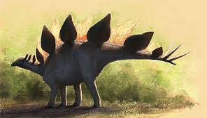
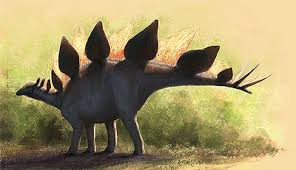

Stegozaury to grupa dinozaurów roślinożernych, które żyły w okresie jury, około 155-150 milionów lat temu. Charakteryzowały się one charakterystycznymi cechami, takimi jak grzbietowa płytka oraz kolczasty ogon. Ich nazwa "Stegozaur" pochodzi od greckich słów oznaczających "dach" i "jaszczur", co odnosi się do rzędów kostnych płyt na ich grzbiecie.
 Główną cechą rozpoznawczą stegozaurydów jest grzbietowa płytka, która składała się z wielu kostnych płytek osadzonych w skórze. Te płytki mogły mieć różne kształty i rozmiary, a ich funkcja nie jest do końca zrozumiała. Jedna z teorii sugeruje, że mogły służyć do termoregulacji, pomagając w utrzymaniu odpowiedniej temperatury ciała poprzez absorpcję lub oddawanie ciepła.

Kolejną charakterystyczną cechą stegozaurydów jest ich kolczasty ogon. Ogon ten, zakończony ostrymi, kolczastymi strukturami, prawdopodobnie służył jako narzędzie obronne, chroniąc dinozaura przed drapieżnikami. Gdy stegozauryd był atakowany, mógł użyć swojego ogona do odstraszenia przeciwnika lub nawet do zadania obrażeń poprzez uderzenie ostrymi kolcami.
Główną cechą rozpoznawczą stegozaurydów jest grzbietowa płytka, która składała się z wielu kostnych płytek osadzonych w skórze. Te płytki mogły mieć różne kształty i rozmiary, a ich funkcja nie jest do końca zrozumiała. Jedna z teorii sugeruje, że mogły służyć do termoregulacji, pomagając w utrzymaniu odpowiedniej temperatury ciała poprzez absorpcję lub oddawanie ciepła.

Kolejną charakterystyczną cechą stegozaurydów jest ich kolczasty ogon. Ogon ten, zakończony ostrymi, kolczastymi strukturami, prawdopodobnie służył jako narzędzie obronne, chroniąc dinozaura przed drapieżnikami. Gdy stegozauryd był atakowany, mógł użyć swojego ogona do odstraszenia przeciwnika lub nawet do zadania obrażeń poprzez uderzenie ostrymi kolcami.

Adres: Zwoleń Radosna 26-700
Kontakt: nr. 797 715 111
email: jurrasicpark@gmail.com
Godziny otwarcia